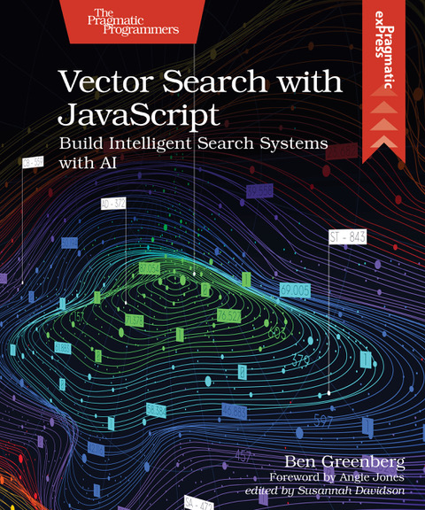
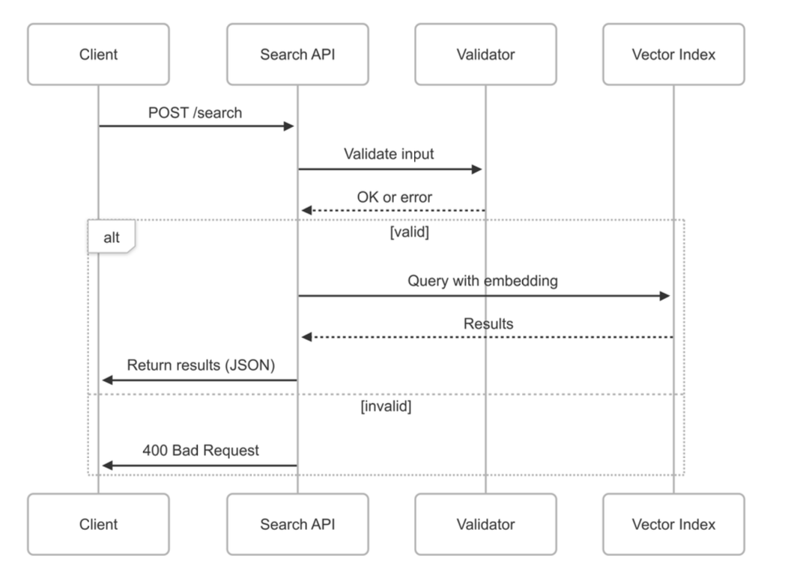

Build Intelligent Search Systems with AI
By Ben Greenberg
Foreword by Angie Jones
A practical guide for JavaScript developers and backend engineers to build intelligent search systems with AI.
Published by The Pragmatic Bookshelf.
Welcome to the world of vector search! This book is your guide to understanding and implementing vector search systems, blending theory with hands-on code examples. Whether you’re a backend engineer or a curious developer, you’ll learn to build intelligent, efficient search systems that deliver value to your users.
Get Notified When Released
Throughout the book, you’ll enhance a full-stack blogging platform (inspired by Medium) with vector-powered functionality. You’ll embed content, enable similarity search, and layer in hybrid techniques to create a modern, intelligent search experience. This project grounds every concept in practical, real-world implementation.
Hands-on ProjectVector search finds content by meaning. Try it by suggesting a title for this book and see which Pragmatic Bookshelf book titles are most alike. *
* This is a simulated demo experience. Results do not reflect a real vector search engine.
Ben Greenberg is a developer advocate, educator, and author passionate about making complex topics accessible to all. He writes and speaks about modern software engineering, search, and developer productivity.
@hummusonrails